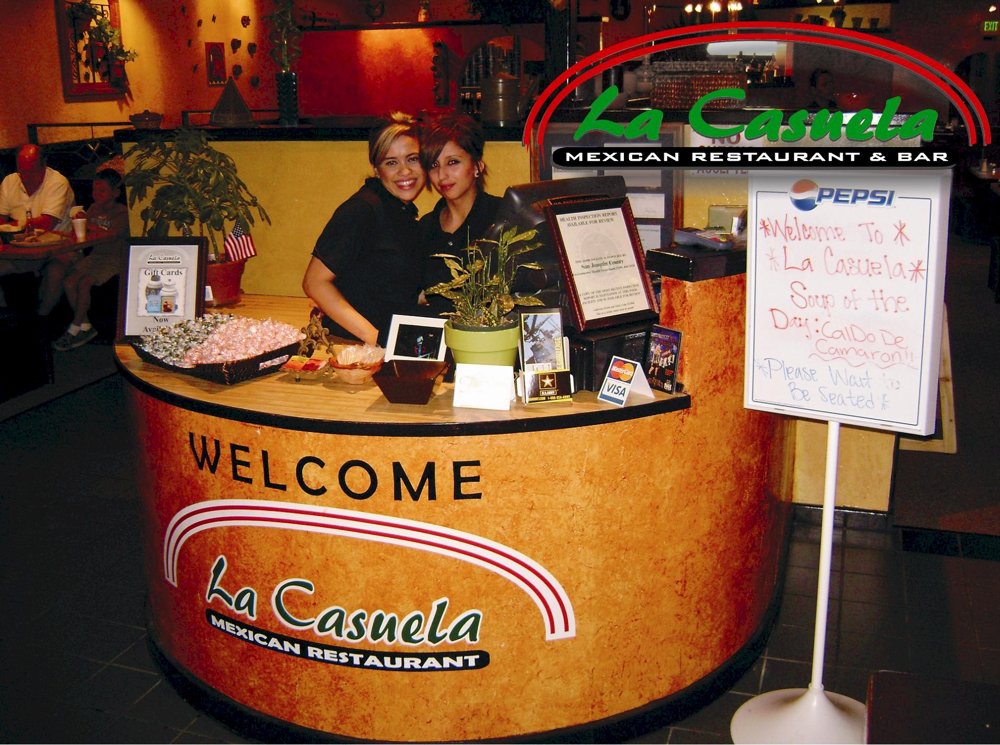

Welcome to La Casuela Mexican Restaurant & Bar
La Casuela Mexican Restaurant & Bar, Home of the Micheladas. Simply the best Mexican Food in the Valley. Located in the heart of Ripon, La Casuela Mexican Restaurant & Bar offers great and affortable Mexican cuisine in a charming atmosphere with friendly service.
Enjoy dining in our casual enviroment dining area or modest and cozy bar, or reserve out our Banquet room, Multimedia room (outfitted with a 50" Flatscreen TV, DVD, and Laptop connection for special occasions.
La Casuela Mexican Restaurant & Bar (La Casuela from the Spanish word "cazuela" a hand made cooking pot costumary used for cooking traditional mexican dishes such as chicken Mole.
|
Hope to see you soon!
|

For Group lunches, large parties or known busy nights.
We recommend making a reservation.
Please get in touch and let us know what you think of this site and our
restaurant.
We're always looking for ways to improve our service and offerings.
(209) 599-4003
laCasuela@verizon.net
The Ramirez Family has been in business for over 25 years. Ana and Guillermo Ramirez developed “Las Casuelas Mexican Restaurant and Bar”, family owned and operated.
There are currently three “Las Casuelas Mexican Restaurant and Bar” locations, each ran by one of Ana’s and Guillermo’s three sybilings, in the towns of Manteca, Modesto, and Turlock.
“La Casuela Mexican Restaurant & Bar” was created under the supervision and support of the Ramirez family although is not ran and operated by the Ramirez Family, it shares the same menu, recipes and family atmosphere that you would expect from “Las Casuelas”.
Visit Las
Casuelas Mexican Restaurant and Bar oficial website
OR LAS CasuelaS FACEBOOK PAGE
Las
Casuelas
 |
La Casuela Mexican Restaurant & Bar iPhone App |